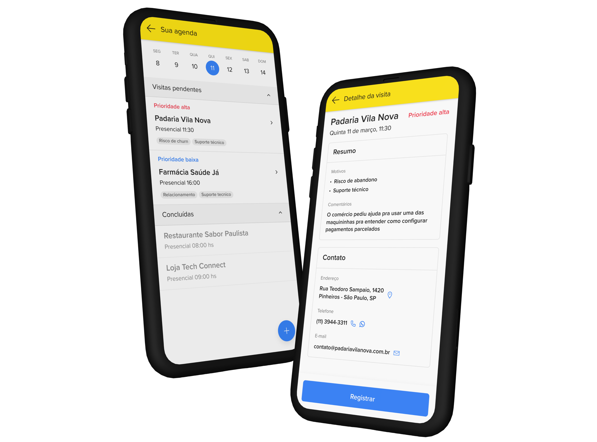
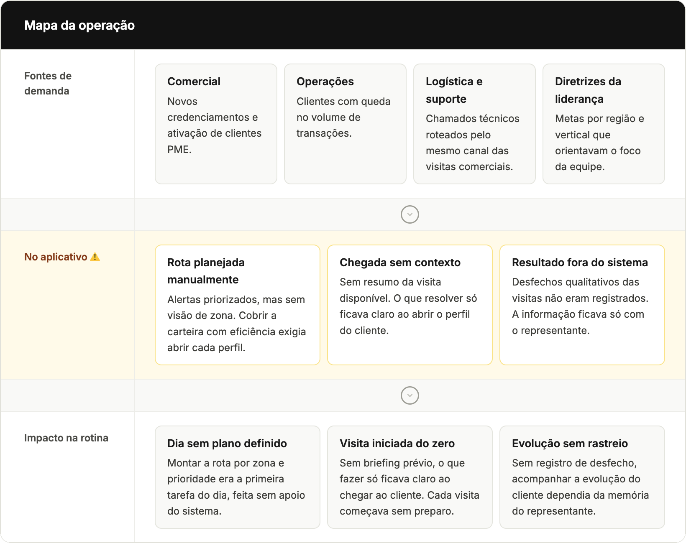
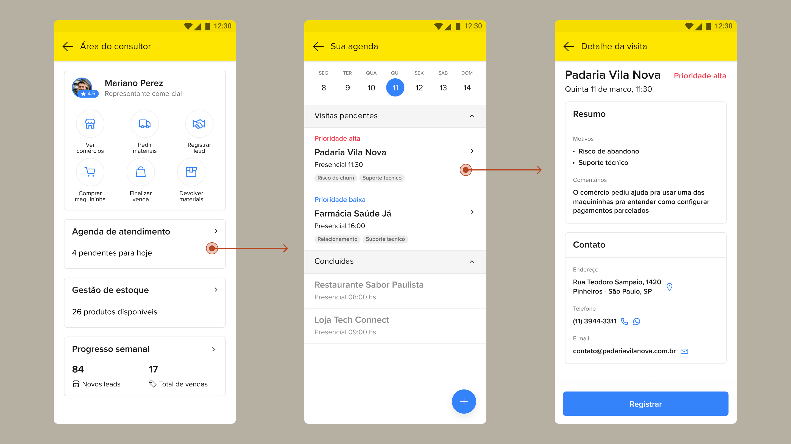

Mercado Pago · 2024–2025
Priorización de visitas comerciales
Los representantes recibían alertas de prioridad, pero la herramienta no ayudaba a transformarlas en un plan de visitas viable. Rediseñar este flujo para Brasil, México y Argentina sin fragmentar el comportamiento del producto entre mercados.

Una herramienta en el centro de las operaciones de campo
El producto
Trabajé en la vertical de adquirencia de Mercado Pago, en un CRM interno utilizado por equipos comerciales de campo para la gestión de carteras de PYMEs.
El contexto
El producto cubre todo el ciclo comercial, desde la prospección hasta el mantenimiento de la base, en un contexto con muchos clientes por región y fuerte presión de ejecución en campo.
Mi foco
Mi foco fue la evolución de la experiencia de priorización de visitas, una etapa central en la planificación diaria de los representantes.
Evolucionando la experiencia de prioridades del CRM
El desafío inicial era revisar la experiencia de prioridades del CRM de los consultores comerciales. La aplicación ya mostraba alertas de la cartera, pero requería navegar entre distintas pantallas para relacionarlas con los establecimientos y entender qué visitas debían realizarse ese día.

De la investigación a la oportunidad de producto
Reuní los principales aprendizajes del Discovery en un único mapa de la operación, conectando análisis del producto existente, alineamientos con áreas socias y conversaciones recurrentes con consultores comerciales. Esta síntesis orientó la definición de prioridades del proyecto y la evolución de la experiencia de gestión de visitas.

Tres propuestas en baja fidelidad
Mapa de visitas
- ✓ Visualiza la cartera geográficamente
- ✓ Planificación espacial
- ✕ Alta complejidad técnica
Agenda priorizada
- ✓ Organiza el día de trabajo
- ✓ Aprovecha datos existentes
- ✓ Menor esfuerzo de ingeniería
Cartera priorizada
- ✓ Bajo costo
- ✕ Poco beneficio en la organización de visitas
La dirección elegida equilibró impacto para el consultor y viabilidad técnica dentro del plazo del proyecto.
La nueva experiencia con foco en la claridad
La nueva interfaz organizó el día del representante a través de una navegación por fechas, trayendo los niveles de prioridad y los motivos de las visitas directamente a la pantalla principal de agenda. Este diseño eliminó la necesidad de adivinar el próximo paso o buscar en perfiles individuales, permitiendo que el profesional entendiera el contexto y la urgencia de cada comerciante antes de tocar la pantalla.

Refinando la experiencia para el lanzamiento
Validé el prototipo con representantes comerciales para confirmar si la nueva estructura de agenda era comprendida durante la planificación de visitas. Las pruebas mostraron que la navegación por fechas era intuitiva, pero aún existía la necesidad de abrir cada cliente para entender el motivo de la prioridad.
Antes de la implementación, incorporé esta información directamente en el listado a través de etiquetas, reduciendo un paso de navegación y haciendo la agenda más escaneable para la planificación del día.